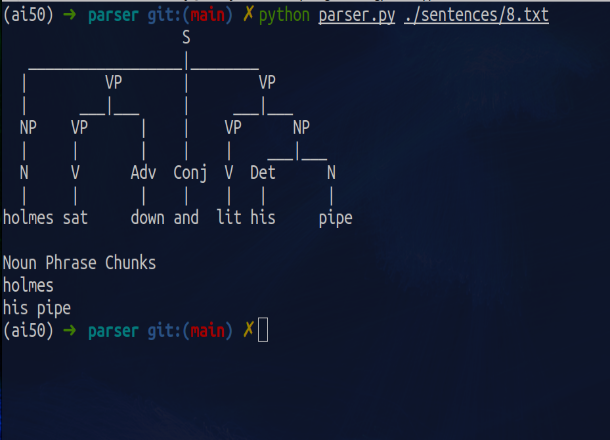

My Portfolio
Mammogram Classification
Graduation Project. A Convolutional neural network (CNN) to classify breast cancer in medical images able to outperform the human eye, referencing an existing study on Mammogram Classification, with the objective of improving the model. Used a Kaggle dataset of 336 images augmented to 3828.

Traffic
Computer Vision project. Write an AI to classify traffic signs using Convolutional Neural Networks.

Parser
Natural Language Processing project. A parser for determining the structure of a sentence.
NLTK
Questions
Natural Language Processing project. Write an AI to answer questions using tf-idf for ranking potential sentences.
NLTK